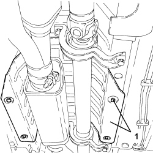
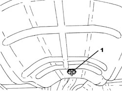
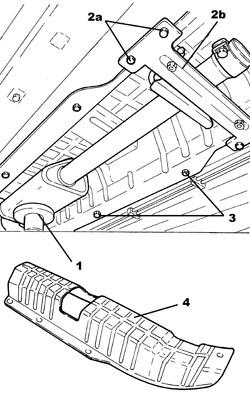

1076A42 FRONT EXHAUST SILENCER FRONT HEAT SHILED R R
- Path
- Procedures > 10 ENGINE > 1076 EXHAUST PIPES AND SILENCERS > 1076A EXHAUST PIPE FASTENINGS AND PROTECTIONS > 1076A42 FRONT EXHAUST SILENCER FRONT HEAT SHILED R R
- Kind
- repair procedure (removal / refitting; the operation number is the code)
- Applies to
- engines: 2.2 JTS, 3.2 JTS; all production periods
- Interactive page
- https://sloeber94.github.io/elrnDB-aBrrSpdr/en/#/946001952
Applies to: engines: 3.2 JTS; all production periods
 Removing
Removing
 Refitting
Refitting- Position the vehicle on a lift.
1. Undo the retaining bolts and remove the heat shield.

Applies to: engines: 3.2 JTS; all production periods
Refitting
Removing- Place the heat shield back in its housing and secure it using the bolts.
- Remove the vehicle from the lift.
Applies to: engines: 2.2 JTS; all production periods
Removing
Refitting- Position the vehicle on a lift.
Op. 1076B72 INTERMEDIATE EXHAUST PIPE WITH HOSE SECTION - R+R
1. Remove the front clip securing the front exhaust silencer front heat shield.

Applies to: engines: 2.2 JTS; all production periods
1. Position a hydraulic jack for supporting the front exhaust silencer.
2. Undo the bolts (2a) and remove the front exhaust silencer mounting bracket (2b).
3. Undo the bolts fixing the front exhaust silencer front heat shield.
4. Lower the hydraulic jack as necessary and remove the exhaust silencer front heat shield.

Applies to: engines: 2.2 JTS; all production periods
- Place the front exhaust silencer heat shield in its housing and secure it using the bolts.
- Place the front exhaust silencer back in its housing using the hydraulic jack.
- Place the front exhaust silencer mounting bracket in its housing and secure it using the bolts.
- Remove the hydraulic jack used for supporting the front exhaust silencer.
- Place the front clip securing the front exhaust silencer front heat shield back in its housing.
Op. 1076B72 INTERMEDIATE EXHAUST PIPE WITH HOSE SECTION - R+R
- Remove the vehicle from the lift.